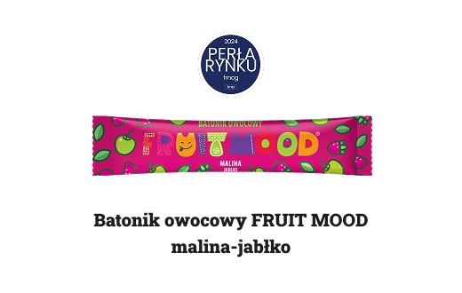
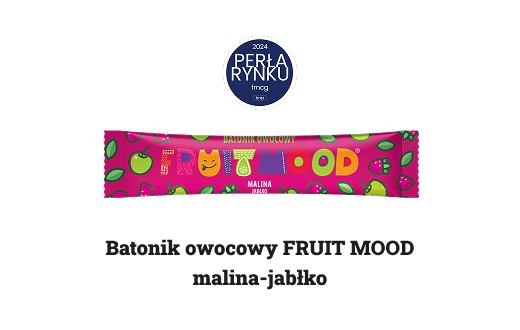

Przekąski owocowe FRUIT MOOD
Przekąska owocowa FRUIT MOOD jest alternatywą dla tradycyjnych
słodyczy, ponieważ nie zawiera dodanego cukru.
Skład to 100% owoców, suszonych przy użyciu nowoczesnych technologii w
temperaturach 40-60°C. Ten proces pozwala na niemal
całkowite zachowanie wszystkich składników naturalnych owoców, w tym
wielu witamin i minerałów. FRUIT MOOD to
przekąska dla osób, które potrzebują szybkiego i smacznego zastrzyku
energii w ciągu dnia.
 
